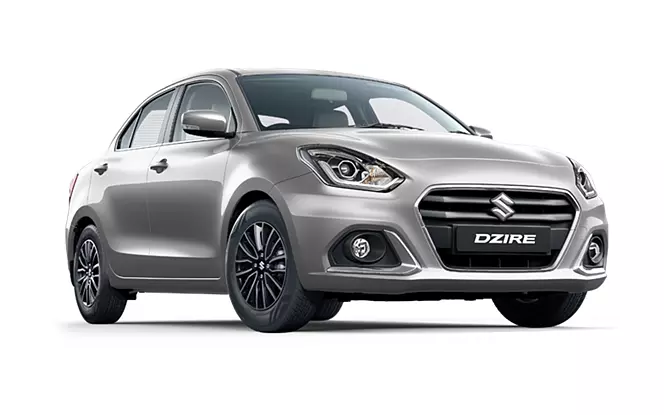

What is swift dezire
The Dzire was launched in 2008 and was based on the first generation Swift hatchback.
The Dzire is a 5 seater 4 cylinder car
Maruti disclosed that while the earlier Swift Dzire is crafted using 20 percent high-tensile steel, the new Dzire will incorporate up to 36 percent of high tensile steel.
The Suzuki Dzire (stylized as the Suzuki DZire, previously known as Suzuki Swift Dzire but still sold as Suzuki Swift Sedan in Colombia and Guatemala)
Maruti Suzuki Swift Hybrid
Maruti Suzuki is preparing to make a significant impact in the hybrid vehicle market. In line with its continuous dedication to innovation and environmentally friendly transportation, the company is ready to unveil two eagerly awaited hybrid models – the next iteration of the Swift and the next generation of the Dzire, reported
As per the publication, these cars are set to bring about a transformation in the compact car category due to their outstanding fuel efficiency and cutting-edge technology
Maruti Suzuki Dzire Hybrid
Maruti Suzuki is ready to elevate the sedan's grace and effectiveness to higher levels. Drawing inspiration from the revamped Swift, the Dzire is predicted to adopt an exterior that radiates sophistication and contemporariness, adds the report. Envisaged exterior enhancements include a revised front fascia, projector LED headlights, and LED taillights.
Similarly, substantial interior modifications are expected, aiming to enhance its premium feel.
- A. Maruti Suzuki Swift Dzire comes in Diesel and Petrol with Automatic and Manual transmission.
- The 1197 cc Petrol engine generates a power of 88.50bhp@6000rpm and a torque of 4400rpm.
- The 1197 cc CNG engine generates a power of 76.43bhp@6000rpm and a torque of 98.4300rpm
